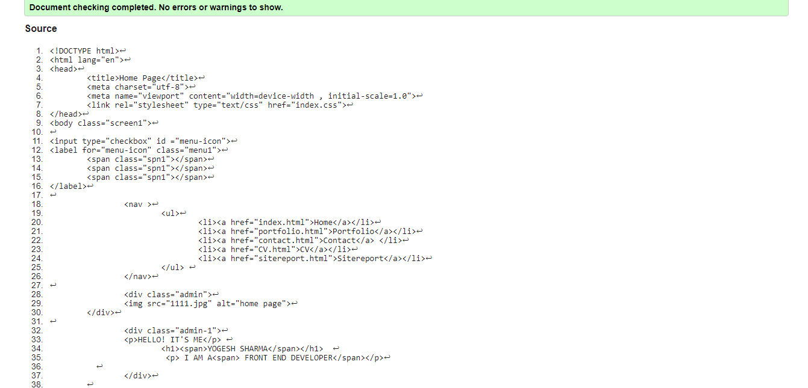

Experience
My name is Yogesh Sharma student of Naya Aaayam multi-disciplinary Institute. Recently, I have joined this college and pursuing my degree of Computing under the University of Northampton. As you see my previous education computer science is my major subject. Due to spending a lot of time in computer I'm so much interested in computung field. Then, I started my first year in march 1st 2021. From the starting day I have enjoyed a lot in the college. The environment of college is so peace and beautiful. There are six modules in our course but we have to study three modules. The modules name is Web Development, Database, Computer System. Among them Web Development is the most interested subject for me. Web development mainly focus on coding which makes for interest for me. From the first lecture we started doing HTMl in web development. The lecture hours are so good. Teachers are so good and puntual with all the students which makes us more easier to talk to them. In a week I have one lecture class of one hour and tutorial class of two hour. Doing Web classes in the Lab with friends makes class more interesting. After some months of our web classes I got a assignment of web development. At first I was in delima what to do in assignment but then I talked to my module teacher. He helped me how to start my assignment. In my assignment at first I have made a homepage where my profile picture is presented and about me. In the second place there is portfolio where my works are presented. In third i have made a contact form where public can contact me and fill their contacts as how can I reach them. In fourth I made a CV where about me is presented. In fifth page I Have made a site report where what I did in the whole portfolio page is mentioned briefly. In some places I faced a problem while doing padding and margin but then I did a inspect which helped me to correct the page in good way. At first, Mobile responsive is also a different thing for me but while doing a work slowly I made a page responsive too which made this page soo much interesting and beautiful for mobile viewers.
Module Experience
Web development is one of the interesting subject in our module code CSY1018. It helps in developing the website in various ways. At first I learned about how to make a webpage and how to make it attractive. After few weeks of lecture and tutorial I got much interest in Web development. In starting it makes so difficult to understand everything but our module teacher helped me more which makes easier to do assignment.
Site Development
Homepage
While making the portfolio page at first in the home page I used the background image of computer as white but it do not suits on it and I've changed it to the light green colour. Previously my profile picture's height and width was larger but now I have reduced the height and width of the picture. In the header section the hover effect in nav has been applied and color of nav items have been changed from black to red.
Portfolio
In the portfolio section at first I have used a digital pictures but now I have used empty white images which looks attractive. Another change is I applied the hover effect on the photos. The height and width of the images has been reduced and padding and margin of top and booton has been changed.
Contact
In the contact section at first I have made a small contact form but now it changed into little big form. The hover effect in send button have been implemented. The contact address, social media icon and social media links has been added to the bottom.The margin and padding of the footer has been changed.
CV

In the Cv section at first I have made a two boxes but it was difficult to make page responsive and later I changed the cv-box in one box and then profile image height and width has been changed and margin top and bootom has been reduced.
Validation Report
Date:06/30/2021
The pictures mentioned below is the validation report of the different sites of portfolio page. The codes are validate by using Validator.w3.org. n.d. The W3C Markup Validation Service. [online] Available at: https://validator.w3.org/ [Accessed 3 July 2021]" By clicking on this link we can get the website of code validator. After facing many problems I got success to validate all my codes for the portfolio sites. All sites are working and all codes are clear. In below pictures at first I have mentioned a validated code of home page and in second I have mentioned the portfolio page and in the third I have mentioned the contact page likewise, at fourth I have placed a CV page. All this codes are fully validated and eaqsy to understand.


- HipWallpaper. n.d. HipWallpaper. [online] Available at:https://hipwallpaper.com/portfolio-backgrounds/[Accessed 3 July 2021]"
- technology, K., n.d. technology, Laptop, Keyboards Wallpapers HD / Desktop and Mobile Backgrounds. [online] HD Wallpapers - Desktop Background Images. Available at:https://wallup.net/technology-laptop-keyboards/ [Accessed 3 July 2021]"
- HipWallpaper. n.d. HipWallpaper. [online] Available at: https://hipwallpaper.com/view/r6fpwA [Accessed 3 July 2021]"
- Iconfinder. n.d. Camera, instagram, instagram logo icon - Free download. [online] Available at: https://www.iconfinder.com/icons/5296765/camera_
instagram_instagram_logo_icon [Accessed 3 July 2021]" - Iconfinder. n.d. Fb, facebook, facebook logo icon - Free download. [online] Available at: https://www.iconfinder.com/icons/5296499/fb_facebook_
facebook_logo_icon [Accessed 3 July 2021]" - Iconfinder. n.d. Linkedin, network, linkedin logo icon - Free download. [online] Available at:
www.iconfinder.com/icons/5296501/linkedin_network_
linkedin_logo_icon [Accessed 3 July 2021]" - Iconfinder. n.d. Tweet, twitter, twitter logo icon - Free download. [online] Available at:
https://www.iconfinder.com/icons/5296517/tweet_twitter_
twitter_logo_icon [Accessed 3 July 2021]" - Youtu.be. n.d. Before you continue to YouTube. [online] Available at:
https://youtu.be/gmY-AUbdTUo[Accessed 3 July 2021]" - Closet-ai.com. n.d. Closet AI. [online] Available at: https://closet-ai.com/outfit [Accessed 4 July 2021]"
- PNGkey.com. n.d. Image 500580 - Placeholder Transparent - Free Transparent PNG Download - PNGkey. [online] Available at: https://www.pngkey.com/detail/u2w7r5y3a9o0w7t4_image-500580-placeholder-transparent/ [Accessed 4 July 2021]"
- Commons.wikimedia.org. n.d. File:ImagePlaceholder icon.svg - Wikimedia Commons. [online] Available at: https://commons.wikimedia.org/wiki/File:ImagePlaceholder_icon.svg [Accessed 4 July 2021]"
- PNGkey.com. n.d. Image 500580 - Placeholder Transparent - Free Transparent PNG Download - PNGkey. [online] Available at: https://www.pngkey.com/detail/u2w7r5y3a9o0w7t4_image-500580-placeholder-transparent/ [Accessed 4 July 2021]"
- PinClipart.com. n.d. Placeholder Clipart (#2010382) - PinClipart. [online] Available at: https://www.pinclipart.com/pindetail/xbihbo_placeholder-clipart/ [Accessed 4 July 2021]"
- Images.app.goo.gl. n.d. Google Image Result for https://jmperezperez.com/amp-dist/sample/sample-placeholder.png. [online] Available at: https://images.app.goo.gl/BhEYKp8e2WCeHRjQ6 [Accessed 4 July 2021]"
Reference
Background Image Reference
Home page
Portfolio page
Contact page
Footer social media image reference
Code Reference of Contact page


{kind=link}